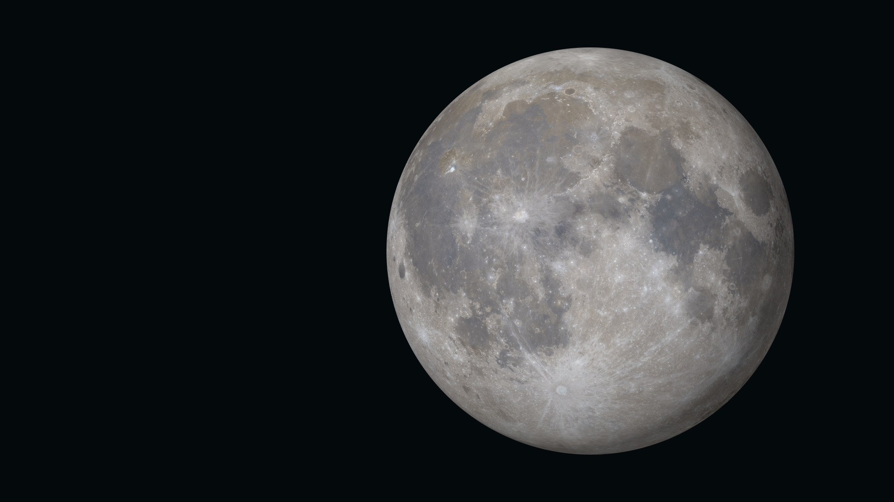
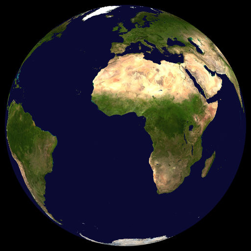

Sunlight grazes the terrain
Near the lunar south pole, the Sun stays close to the horizon. A ridge can hide it even when it is above the level horizon. Solar visibility is separate from the electrical power a particular array can generate.

Lunar Landing Site Navigator
Choose a location and date.
NASA terrain-aware study points.
Playback covers the cached date range at the selected speed. At the pole the Sun circles low around the horizon.
UTC · cached dates loading
Geometric visibility only. Electrical power, radio performance and landing safety are not modeled.
Loading the locally bundled NASA Moon model…

These are user-editable assumptions, not NASA specifications. All values are hours.
Illustrative mission requirements — not real lander specifications.
Signed margin: positive is room within a limit; negative is beyond it. A bound alone does not resolve an INDETERMINATE rule.
Sun-center visibility: the Sun’s center clears terrain and is outside Earth’s apparent disc.
Earth-center LOS: an unobstructed geometric line to Earth’s center.
Joint visibility: both conditions hold at the same time.
See where the Sun and Earth sit in the sky anywhere on the Moon at the time shown above. Angles are measured from the level horizon; terrain is not included here.
Level-horizon geometry only. Hills and crater rims can hide a low Sun or Earth sooner, so this is not a visibility result. Terrain-aware visibility is calculated only for the listed south-pole study points. Earth’s direction is accurate to about 0.05°. Coordinate source ↗
Visibility is geometry, not measured electrical power or a working radio link. The reduced NASA LOLA surface extends 32 km; more distant ridges use the calculated nominal skyline projected at an artificial 200 km distance. That curtain and local mesh are display geometry, not the uncertainty bounds used to decide a mission. Sun and Earth centers follow cached 30-minute azimuth/elevation samples. In surface view, bodies are hidden unless retained, coarse and fine intervals all confirm visibility; this does not model the complete solar or Earth disc. Fixed approximate diameters are 0.53° and 1.9°. Earth’s approximate lit phase follows the cached Sun direction; its historical cloud-free NASA texture and geographic face are not registered to the simulated time. Surface brightness uses a Lommel–Seeliger regolith approximation with restrained procedural display grain that adds no relief. Direct light is withheld when Sun-center visibility is blocked or unresolved at the observer; otherwise it shades slopes by orientation. This display gate is not a full-disc illumination or terrain-cast-shadow calculation. A faint artificial fill preserves silhouettes. Optional Night assist adds labeled artificial light for inspection; neither models Earthshine or calibrated night brightness. In orbital view the Sun and Earth sit in their computed directions at fixed approximate angular sizes with schematic distances. Sun focus uses optical zoom, preserving its 0.53-degree disc. Camera zoom changes field of view, not observer height or sky angles. Rocks, landing hazards, power, thermal safety and radio hardware are not modeled. Only the listed study points and cached dates have evaluated terrain-aware calculations. NASA sources and hashes are available in Advanced.
SUPPORTED STUDY SITES · CACHED DATES
Site changes are prelaunch concepts. A later surface window does not establish spacecraft reachability.
Same requirements · independent arrivals
Joint means both center-visibility conditions at once. Site changes are prelaunch concepts. The duration and any enabled requirements stay the same.
SOUTH POLE / Lunar Landing Site Navigator
Compare sunlight and Earth visibility at lunar south-pole study points. Set mission limits, impose a delay, and find the earliest sampled start that meets them.
Understand the science
NASA/JPL SPICE is a toolkit that uses published files of celestial positions and orientations, called kernels. It calculates the apparent directions of the Sun and Earth from the selected lunar surface observer. A lunar reference frame is the Moon-fixed coordinate system used to keep that observer and the terrain aligned.
We use MOON_ME_DE440_ME421 and record the kernel versions and hashes. A 24-direction comparison with JPL Horizons checks the direction calculation. For Apollo, CLPS and custom coordinates the same cached directions are rotated to the chosen point; a check against JPL Horizons at Apollo 11 and Chang’e 4 agreed within 0.001° for the Sun and 0.01° for Earth. Both use related JPL models, so their agreement does not independently validate the terrain.
NASA LRO/LOLA elevation grids describe the surrounding ground. We follow the curved Moon to estimate the highest terrain in each direction: the local horizon. Near the pole, the Sun grazes that horizon, so a ridge can hide its center even above a level horizon.
Terrain bounds are lower and upper skyline estimates under the adopted data model. The 5 m local and 80 m regional grids contain interpolation; their spacing is not physical accuracy. Missing terrain stays unknown. If a body lies between the bounds, we keep its visibility unresolved rather than assuming it is clear. The 3D display mesh does not decide visibility.
Sun-center visibility means the Sun’s center clears the terrain and Earth’s apparent disc. Earth-center line of sight means the modeled terrain does not block the direction to Earth’s center. Joint visibility means both conditions hold at once.
We add those intervals inside your arrival-to-end window. Total overlap may contain separate periods; continuous overlap is the longest uninterrupted one. A duration range retains unresolved time and differences between numerical refinements. It is not a statistical confidence interval. The view clock inspects an instant without changing the evaluated arrival or duration.
Every eligible start on the displayed UTC grid is evaluated at each supported study point, with the same duration and scheduling bounds. Without mission requirements, each site shows its largest confirmed joint-time minimum; an earlier sampled start breaks ties. Unresolved time may change the actual ordering.
With explicit requirements enabled, the engine seeks confirmed passing starts without relaxing any limit. A failed start breaks a selected rule; an indeterminate one lacks enough evidence. Schedule exclusion is separate from adverse terrain conditions. The hourly grid is a sampled search, not an exact continuous optimum, trajectory or guarantee that a spacecraft can reach a later opportunity.
Numerical refinement repeats a calculation with different sampling settings. CONVERGED means the configured checks agree, not that every physical error is known. Terrain reconstruction, interpolation, small features, missing data and center-versus-full-disc geometry remain limitations. Sunrise or Earthset timing stays unresolved when the bounds cannot establish it.
Sensitivity asks what changes when observer height, position or terrain is varied. Seven separate configurations are available at de Gerlache; they are not combined uncertainties, probabilities or universal robustness. Tests include analytic geometry, interval logic, source checks and actual browser workflows. There is no independent observational validation of the full terrain skyline. The apparent Earth texture orientation and displayed lighting are illustrative as disclosed.
01 / Surface environment
Target elevations and terrain horizon during the selected mission.
Preparing cached geometry for playback…
Preparing the offline mission sample…
Concept-study comparison only. Same planned start, delay, duration and constraints at every site. This does not authorize changing a launched mission's landing site.
02 / Landing opportunities
Feasibility is evaluated against the selected hard limits. Unresolved inputs remain indeterminate.
03 / Lunar south pole
Explore the packaged study coordinates. A map location does not establish terrain coverage or a feasible landing.
Packaged study points
Select a landing decision to inspect its limits, signed margins, and witness intervals.
Compare fixed observer heights against the selected mission’s limits at the same coordinates. Each height is a design setting.
Compare the nominal point and two illustrative 25 m map offsets at the selected start. The observer is 2 m above local ground at each point.
Compare nominal terrain and two NASA PGDA correlated realizations of the local 5 m elevation model. All three use the same regional terrain and an observer 2 m above each local surface. Results apply to these three cases.
Near the lunar south pole, the Sun stays close to the horizon. A ridge can hide it even when it is above the level horizon. Solar visibility is separate from the electrical power a particular array can generate.
Lunar libration changes Earth’s direction above a fixed surface point. Terrain can block its center. Earth-center line of sight is geometric visibility; a working RF link also needs antennas, pointing, a link budget, and network availability.
The same mission begins in a different sequence of light and blockage. Recovery searches later sampled starts at the same site while keeping the duration and hard constraints fixed. Cross-site comparison is a prelaunch concept study.
The solar and Earth targets are evaluated against the local curved terrain skyline. Joint visibility requires both conditions at the same time.
Results concern surface geometry over a bounded time range. Array power, radio link closure, terrain hazards, and reachable trajectories require separate analyses.
Points are study coordinates. PASS means the modeled environment satisfies the selected limits.
Human teammates and AI assistance
NASA LRO/LOLA topography and JPL lunar and planetary ephemerides. The certificate carries bundle identity and source hashes.